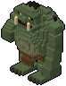
Troll
Enorme e lento, con una clava nodosa. Cala la clava davanti a sé e rutta una nube verde tutt'intorno: allontanati dal cerchio.
- Energia
- 45 + 7,5 per piano sotto il primo
- Danno
- 3 per colpo
- Velocità
- 3 m/s
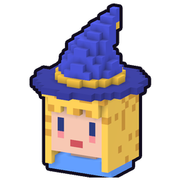
RunesswikiIl boss aspetta nella stanza dietro la porta nera, e lo sceglie il seed tra quelli dell'ambiente del piano. Ogni boss ha un copione fisso di attacchi e due fasi: nella seconda ruggisce, cambia copione ed è più svelto. La sua energia cresce per ogni piano sotto il primo. Quando cade si apre la scala e sale un altarino con un dono maggiore (vedi Poteri).

Enorme e lento, con una clava nodosa. Cala la clava davanti a sé e rutta una nube verde tutt'intorno: allontanati dal cerchio.
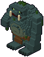
Un troll coperto di muschio. Le sue ferite si richiudono se gli dai tregua; il fuoco le cauterizza.
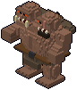
Un gigante a due teste, una clava per mano: doppia clavata, spazzata larga e massi tirati a parabola.
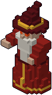
Un vecchio in tunica rossa sospeso sul pavimento. Palle di fuoco, ventagli e colonne di fiamme: esci dal cerchio rosso.
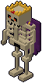
Uno scheletro enorme con la corona e lo spadone. Spazzate larghe, fendenti che fanno tremare il pavimento, e chiama i suoi guerrieri.
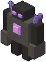
Un gigante di roccia col cuore di cristallo. Pugni, ventagli di schegge e pugni a terra: quando alza le braccia, allontanati.
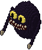
Quello che le bambine sentono respirare sotto il letto. Sprofonda nel pavimento e sbuca sotto di te: quando l'ombra si ferma, scappa.
Non li sorteggia nessun ambiente: prendono il posto del boss di certi piani, secondo quello che è successo nelle discese passate dello slot. Vedi La storia.
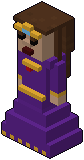
Tua madre, col diadema. Lancia malie viola che ti rallentano, poi una fila di dardi di ghiaccio: non farti prendere dalla malia.
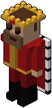
Tuo padre, con la corona. Lo scudo para i dardi da davanti; si china e carica a testa bassa: fatti di lato, poi colpiscilo mentre riprende fiato.
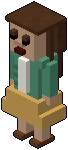
Mamma col golfino verde. Come la regina: malie che rallentano, poi dardi di ghiaccio.
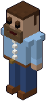
Papà in camicia e jeans. Come il re: scudo davanti, cariche a testa bassa e fendenti.